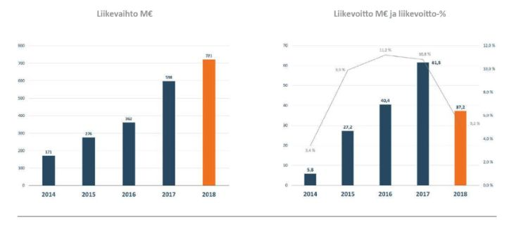
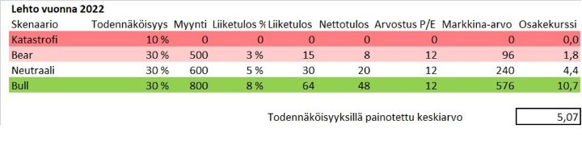

Lehto – pörssin kolera, syöpä ja rutto samassa paketissa
Minulta kysyttiin Sijoitustiedon keskustelupalstalla, mitä mieltä olen Lehdosta.
Osake on laskenut 82% reilussa vuodessa aina 2,5 euroon saakka. Moni on todella suuttunut. Mutta yhtiölle suuttuminen on vähän kuin suuttuisit puulle tai pensaalle — yhtiöillä ei ole tunteita, eivätkä ne voi olla pahoillaan. Johdolle voi olla toki vihainen, mutten ole kokenut sitä hyödylliseksi.
Hävisin viime vuonna kaikista osakkeista kaikkein eniten rahaa Lehdon osakkeella. Satuin olemaan reiluhkon Lehto-position päällä tulosvaroitukseen ja sopivasti vielä lomalla ulkomailla. Voisin olla vihainen ja häpeissäni, mutta sen sijaan mietin tosissani, ostaisinko lisää osakkeita.
Analyytikot ovat nyt pörssikurssin romahduksen jälkeen ensimmäistä kertaa siirtyneet osakkeessa negatiiviseksi. 14 euron kurssilla joka ainut analyytikko suositteli ostamaan osaketta. Ulkomaisten pettyneiden sijoittajien lisäksi OP:n rahastot ovat olleet myyntipäällä. Jos pitäisi veikata lopettavatko salkunhoitajat performanssinsa pilanneen lilliputin myymisen puoliväliin, veikkaisin etteivät jätä.
Aika harvinaista on myös se, että pari hedge fundia on shorttina näinkin pientä 150 miljoonan euron markkina-arvoista yhtiötä.
Lehto on tällä hetkellä yhtiö ja osake, jolle hevosetkin nauravat. Sen slogan ”talousohjattua rakentamista” on itsessään vitsi kaikkien näiden tulosvaroitusten jälkeen. Viime viikolla heiluvalla pepulla netissä mainostetut Lehdon asuntojen tuottotakuun ”varmat tuotot” suututtivat nekin, jotka osakkeella eivät vielä ole rahaa hävinneet. Eikä ole ollut vain yksi kerta, kun olen kuullut yhtiön ongelmien johtuvan jostain lestadiolaisten stereotypiasta, mitä en tässä ala toistamaan.
Mikään näistä ei ole ostosignaali itsessään. Mutta osaketta ja tilannetta ehkä kannattaa katsoa vähän syvemmälle. Nyt sentimentti yhtiötä kohtaan on jo synkissä vesissä. Kukaan ei halua koskea osakkeeseen pitkällä tikullakaan.
Lähtökohtana pohdiskelulle osaketta on vähän yli prosentti salkun arvosta.
Mistä Lehdossa on kysymys?
Lehto rakentaa uuden strategiansa mukaisesti asuntoja, toimitiloja ja hyvinvointitiloja. Tappiollisesta korjausrakentamisesta luovutaan kuluvana vuonna, mutta linjasaneerauksista haetaan syklien yli tasaisuutta myös jatkossa.
Mistä Lehdon kilpailuedun pitäisi muodostua:
- Kustannustietoinen suunnittelu ja vakioidut ratkaisut.
- Teollinen esivalmistus. Moduuleista saadaan kustannusetua ja ennustettavuutta.
Siinä on paljon järkeä, että Lehto tuoreena yhtiönä voisi hyötyä näistä tekijöistä ja digitalisaatiosta enemmän kuin alan dinosaurukset kuten YIT, SRV ja isot ruotsalaisveljet. Tyhjältä pöydältä modernisointi on helpompaa kuin vanhojen jäärien, liittojen ja tapojen kanssa taistelu.
Kuten alla olevasta kuvasta nähdään, liikevaihto jatkoi vuonna 2018 kasvua, mutta tulos iski loppuvuonna seinään. Ja viimeisimmän tulosvaroituksen mukaan, tulos heikkenee vielä kuluvana vuonna entisestään.

Lehdon analysointia helpottaisi huomattavasti, jos yhtiö erittelisi kuinka paljon tulospommista voidaan laittaa korjausrakentamisen katastrofiprojektien piikkiin. Sijoittaja voisi laskea, mikä on normaali tuloskunto ja mikä on korjausrakentamisen poistumisen myötä merkityksetöntä kertaluonteista kustannusta. Tätä luksusta meillä nyt ei kuitenkaan ole. Olen nähnyt viime vuodelle 15 miljoonan euron arvioita ja tälle vuodelle voisi haarukoida samansuuruista rahareikää.
Mielestäni on todennäköistä, ettei uuden ennustehaarukan (2%-6%) keskikohta 4 % liikevoitto ole uusi hyvän suhdanteen normaalikate. Todellinen lienee tuon ja huippuvuoden 11% välimaastossa. Huippuvuonna voidaan luultavasti päästä 10% tasolle ja heikkoina vuosina voidaan päätyä nollan prosentin tietämille. Onneksi nousukaudet tuppaavat olemaan laskukausia pitempiä.
Nyt sijoittajilla on kuitenkin monta huolta:
1. Johto on joko todella heikko näkemään liiketoiminnan kehitystä edes puolen vuoden päähän tai sitten he ovat epärehellisiä. Johto sanoi vielä helmikuussa sijoittajapuhelussa, että ohjeistus on varovainen, koska ei haluta enää antaa tulosvaroituksia. Hupsista — menin lankaan ja ostin vähän osaketta tähän kommenttiin. Uskon silti, että ongelmat ovat tulleet yllätyksenä ylimmälle johdolle. On haluttu uskoa parempaan.
2. Yhtiö sai aiempina vuosina pidettyä taseensa pienenä myymällä asunnot ennakkoon sijoittajille alennuksella. Tämä mahdollisti valtavan nopean kasvun kohtuullisella pääomalla. Nyt kuitenkin ennakkomyyntibuumi näyttää hiipumisen merkkejä, ja Lehdon velka on alkanut paisua. Taseriski on ollut viimeinen niitti osakkeen romahduksessa.
3. Yhtiö rakentaa kuumaan sykliin uuden 9000 neliömetrin tehtaan Oulaisiin ja lisää 20 000 neliömetriä kapasiteettia Hartolaan. Tänä vuonna sitten lomautetaan. Huonoa johtamista, lisää taseriskiä seuraaville vuosille.
4. Asuntojen rakentamisessa oli huippusykli päällä, joka ei voi jatkua yhtä kuumana. Tämä johtaa kovempaan kilpailuun hankkeista ja voi pehmentää asuntojen myyntihintoja. Nyt asuntojen aloitusvauhti Suomessa on 45 tuhatta kappaletta, kun normaalimpi tahti olisi 30 tuhatta kappaletta. Kaikilla asuntorakentajilla tulee olemaan vaikeampaa, kun myyntimääristä leikataan kolmannes pois. Kustannuspaineiden helpottaminen toisaalta pehmentää iskua.
Lehto on pistänyt itsensä siis tiukkaan paikkaan, eikä lähivuosina uutta antiakaan voi lukea pois laskuista. Jos kaupanpäälle saadaan yleinen pörssien lasku, voidaan uutta rahaa joutua hakemaan masentavan alhaisella osakkeen hinnalla.
Sisäpiirin myynti
Myy, kun sisäpiiri myy. Sen tiesi jo Seppo Saarion pörssiraamattu vuosikymmeniä sitten. Lehdon ongelmat olisi tyhmempikin nähnyt, koska suuri omistaja myi viime vuoden keväällä ison pinon osakkeita 12 eurolla. Mutta asia ei ole niin yksinkertainen.
Meillä ihmisillä on monenlaisia vääristymiä ajattelussamme. Yksi pirullisimmista on lopputuleman harha. Ihmiset tulkitsevat tekemisen laadun lopputuloksen perusteella, vaikka sattuman rooli olisi valtava. Kroonisimmat tapaukset laittavat kenovoitotkin taidon piikkiin. Sille on helppo nauraa, kunnes huomaat itse tekeväsi samaa hienovaraisemmin. Osa ihmisistä suhtautuu autolla pikkumatkan pikkutuiskeessa ajamiseen hauskana jekkuna, mutta on valmis kirvesmurhaamaan rattijuopon, kun jotain sattuu. Me arvioimme asioita lopputuloksen, ei prosessin perusteella.
Jos olisit myynyt aina kun sisäpiiri myy, olisit myynyt Applen, Microsoftin, Walmartin ja Disneyn ennen satakertaistumisia. Lähes kaikissa firmoissa sisäpiiri myy ajoittain. Juuri listatuissa yhtiöissä sisäpiiri myy luultavasti melko isoja eriä. Se on yksi tärkeimmistä syistä listautua! Sisäpiirimyynnin onnistuneen listautumisannin jälkeen ovat enemmän sääntö kuin poikkeus, etenkin kun osakekurssi on noussut.
Silti sijoittajat tuntuvat olevan lähes yksimielisiä siitä, että olit täysi idiootti, jos et myynyt Lehtoa keväällä 2018. Kun osakekurssi nuijittiin nyt 2,5 euron hintaan, niin vielä senkin jälkeen Twitterissä kyseltiin, että mikä laskussa yllätti? Sisäpiirihän myi 12 eurolla.
Tilastollisesti sisäpiirin ostot ovat paljon voimakkaampi signaali kuin sisäpiirin myynnit. Sisäpiirin myynneille on paljon hyviä syitä, koska on järkevä hajauttaa riskiä ja parantaa elämänlaatua. Sisäpiirin ostoille taas yleensä on vaikea keksiä muita syitä kuin että osakkeessa on sisäpiirin mukaan arvoa.
Tällä kertaa kävi näin, mutten usko ”myy, kuin sisäpiiri myy” toimivan kovin hyvin mekaanisena sääntönä.
Tase
Saako Lehdon osake taseesta sitten tukinojaa? Itse ajattelin, että asuntojen myynti saksalaiselle asuntorahasto DWS:lle ennen osavuosikatsausta oli hyvä liike. Osavuosikatsauksessa kuitenkin näkyi, että asuntoja oli pakko saada liikkeelle, jottei tase mene aivan kuralle.
Lehto on yhden vuoden aikana mennyt nettovelattomasta tilasta yli 220 miljoonaa euroa nettovelan puolelle. Se on melko paljon 145 miljoonan euron markkina-arvoiselle yhtiölle. Vaikka yhtiön markkina-arvosta on sulanut vuodenvaihteen jälkeen yli 40%, ei velan sisältävä yritysarvo ole laskenut. Huono ensimmäinen neljännes ja IFRS 16 muutokset saavat luvut näyttämään turhankin heikoilta. Asuntojen tukkumyynnit taas parantavat lukuja seuraavissa katsauksissa.
Toki yhtiöllä on omaa pääomaa nyt melkein osakekurssin verran. Loppuvuonna oma pääoma tulee vielä nousemaan selkeästi, koska Lehdon tulos painottuu loppuvuodelle. Kuitenkin, koska asuntojen myynti näyttäisi merkittävästi hiljentyneen, olisin varovainen käyttämään omaa pääomaa jonain tukitasona, jonka alle kurssi ei voisi valahtaa.
Nykytila ja arvostus
Ohjeistuksen keskikohdalla yhtiön EPS olisi noin 0,35 euroa. Tällä yhtiön P/E:ksi saadaan 7. Hinta suhteessa kirja-arvoon on painunut yhteen. Yritysarvon kertoimia on hiukan vaikea arvioida, koska Lehdon taseen rakenteen ennustaminen vuoden loppuun on lievästi sanottuna haasteellista.
Lehto arvostetaan siis kuten heikko yhtiö arvostetaan hyvän rakennussuhdanteen huippuvuosina. Koska yhtiöön ei ole luottoa, tunnuslukujen perusteella arvostus ei ole mielestäni kohtuuttoman alhainen. Suhteessa ruotsalaisiin kilpailijoihin JM ja Bonava sekä kotimaiseen YIT:hen, on varmasti perusteltua käyttää jonkinlaista alennusta.
Toinen kysymys, uskooko joku vielä johdon ohjeistukseen? Toisaalta ohjaushaarukka sisältää lopetettavien toimintojen kuluja ja kertaluonteisiksi väitettyjä tappioita. Optimisti voisi ajatella, että haarukan keskikohta näistä puhdistettuina viittaisi 0,4-0,45 euron osakekohtaiseen tulokseen.
On kuitenkin harhaluulo, että markkinoilla voisi tehdä merkittäviä tuottoja P/E-lukuja vertailemalla. Kaikkein tärkeintä on arvioida, miten tulos seuraavina vuosina kehittyy. Se ajaa lopulta kurssia.
Mitä Lehdosta nyt odotetaan?
- Nyt Lehdon uutena tasona on alettu pitää 4% liikevoittoa. Tätä on perusteltu muiden rakennusyhtiöiden kannattavuudella. Mutta eikö ketterä ja tehokas rakentaja voisi ihan hyvin päästä yli syklin 6-8% liiketulokseen? Lehdon suurin painopiste asuntorakentaminen on kannattavampaa kuin jättihankkeet tai infra, joissa moni kilpailija on vahvasti mukana. Etenkin aikana, jolloin rakentamisen kustannukset nousevat odotettua kovemmin.
- Lehdon kilpailuetu on vedetty pois pöydältä. Sitä ei sijoittajien ja analyytikoiden kirjoissa enää ole olemassa. Uskon, että Lehdolla on etua, mutta sen koon määrittäminen on vaikeaa.
Kukaan ei puhu nyt potentiaalisesta käänneyhtiöstä.
Sanotaan, että Lehto pääsisi tavoitteisiinsa, eli 10-20% kasvu vuodessa ja liikevoitto 10% liikevaihdosta. Aika villi tavoite juuri nyt, mutta annetaan ajatuksen leikkiä. Otetaan huomioon lähivuosien heikompi sykli ja laitetaan liikevaihdoksi vuonna 2023 tasan miljardi euroa. Siitä liikevoitto 10%, eli 100 miljoonaa euroa. Yhtiö on aiemmin ollut taseeltaan kevyt, ja uskotaan vielä sekin, että silloin ei ole paljon velkaa, joten velanhoitokulut ovat 5 miljoonaa euroa. Verojen jälkeen nettotulokseksi jäisi 76 miljoonaa euroa.
Kun sitten Lehto on neljässä vuodessa tehnyt kaiken putkeen, ottanut markkinaosuutta ja osoittanut konseptin toimivuuden myös Ruotsissa, annamme sille preemiohinnoittelun P/E 15 tasolle.
Näin markkina-arvoksi saataisiin 1140 miljoonaa euroa eli 7,8 kertaa enemmän kuin nyt.
Uskonko tähän skenaarioon?
En tietenkään. Voisin saman tien laittaa pellen puvun päälle ja alkaa jonglöömaan nauravan yleisön edessä.
Muttei se ole täysin mahdotontakaan. Jos olisi etukäteen kertonut, miten Nesteen liiketoiminta ja osakekurssi tulevat kehittymään kuutena vuotena tähän hetkeen, olisi kertoja naurettu neukkarista pihalle.
Kun haluaa isoja tuottoja, pitää jättää ilmeiset seikat vähemmälle huomiolle ja lyödä vetoa odottamattoman puolesta. Se ei vielä sinällään riitä, pitää välillä myös osua oikeaan.
Käänneyhtiöihin sijoittavana näytät vähän väliä pelleltä, koska melko suuri osa niistä ei lopulta käänny. Ne, jotka kunnolla kääntyvät, tuppaavat monikertaistumaan. Suurin osa on mieluummin näyttämättä pelleltä ja hankkiutuu eroon luusereistaan. Se avaa tilaisuuden osaavalle. Mutta osaavakin ajaa vähän väliä kunnon miinoihin.
Alla kuvassa on skenaarioviritelmä Lehdosta:

Tällainen analyysi on hyvin riippuvainen tehdyistä oletuksista. Oletan, että rahoituskulut eivät paisu suhteettomasti, eli tase saadaan kohtalaisesti hallintaan. P/E 12 kuvaa syklin yli rakennussektorin historiallista arvostusta.
- Katastrofi skenaario tarkoittaa konkurssia.
- Bear skenaario odottaa 15% liikevaihdon laskua, osakeantia (osakemäärän lisäys huomioitu myynti/tulos luvuissa), ja alle Lehdon kaltaisten vertailuyhtiöiden kannattavuutta.
- Neutraali skenaario tarkoittaa 15% liikevaihdon kumulatiivista laskua neljässä vuodessa ja vertailuyhtiöiden tyypillistä kannattavuutta.
- Bull skenaariossa on sisällä sykliä vastaan hyvin maltillista kasvua ja selvästi alle Lehdon tavoitetason kannattavuus.
Yksi huomio on, että vaikka 40% todennäköisyydellä olisit tässä laskelmassa tappiolla 4 vuoden päästä, odotettu tuotto, 20% per vuosi, olisi todella hyvä.
Tämän kaltaisen laskelman päätarkoitus ei ole määrittää osakkeen oikeata hintaa. Huomattavasti tärkeämpää on havaita, miten herkkä osake on erilaisille oletuksille. Etenkin sitä, että sekä tuloksen että arvostuksen nousu yhdessä toisivat osakkeeseen valtaisan vivun.
On houkuttelevaa esittää tietävänsä, mitä yhtiölle tapahtuu. Yleensä kukaan ei tiedä. Eivät analyytikot, eivätkä sijoittajat. Laskelma diskontatuista kassavirroista näyttää pätevältä, mutta näin suuren epävarmuuden vallitessa luvut on heitettävä jossain määrin hatusta.
Yhteenveto:
Vastarannankiiski sisälläni halusi löytää Lehdosta turhaan parjatun helmen. Lehto on kuitenkin ihan ansaitusti romuksi myyty osake. Siinä on kuitenkin myös rohkealle tilaisuus hyötyä, jos yhtiö onnistuu korjaamaan kurssinsa.
On vaikea sanoa, kuinka suuressa liemessä Lehto lopulta on. Osakkeeseen hinnoitellaan jo kunnon liisteriliemi, mistä ei moneen vuoteen päästä ylös. Mielestäni osakkeen hinnassa on nyt jo mahdollisen annin myötä osakemäärän lisääntyminen.
Olisi väärin sanoa, että meillä on luottoa Lehtoon. Meillä ei sitä varsinaisesti ole. Mutta on mahdollista, että yhtiöllä on rakentamisessa kilpailuetua alan dinosauruksiin nähden. Lehto teki vuosien 2013-2017 välillä lähes kaiken oikein. Se kasvoi yli 50 % vauhdilla neljä vuotta keskimäärin positiivisella kassavirralla ja todella hyvällä kannattavuudella.
Recency bias saa sijoittajat painottamaan paljon viimeistä kahta vuotta, kun ajettiin karille. On hyvä antaa hieman painoa myös aiemmille onnistumisille. Yksi tulkinta tästä olisi, että Lehto on todennäköisesti keskimääräistä laadukkaampi rakennusyhtiö, jolta mopo karkasi käsistä.
Tämän pohdiskelun perusteella nostamme Lehdon painon salkussa kahteen prosenttiin. Se kuvastaa osakkeen alhaisia odotuksia ja arvostusta, mutta samalla myös todella korkeaa riskiä.
Emme halua sitouttaa merkittävästi pääomia alalle, jonka tuottavuus on viimeisen 50 vuoden aikana jämähtänyt paikalleen. Rakennusala ei ole tunnettu hyvästä kassavirrastaan tai pääoman tuotostaan. Etenkin kun sykli on vasta kääntynyt laskuun, emmekä tiedä kuinka heikoksi tilanne etenee.
Toisaalta syklisissä osakkeissa tuotot tehdään silloin, kun asiat näyttävät toivottomilta. Lehdosta hyvin harvalla on enää positiivista sanottavaa.
Disclaimer: Kolumnit sisältävät mielipiteitä ja mahdollisesti tietoa omista sijoituksistamme, jotka voivat vaihdella päivästä toiseen. Mitään, mitä kirjoitamme ei tule ottaa sijoitussuosituksena. Kuten teksteissämme painotamme, päätökset kannattaa aina tehdä itse. Lukija vastaa itse voitoistaan ja tappioistaan.